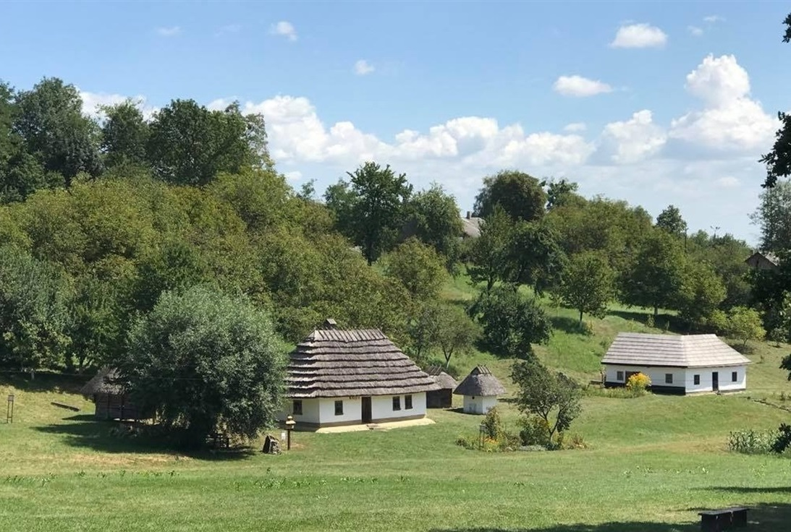
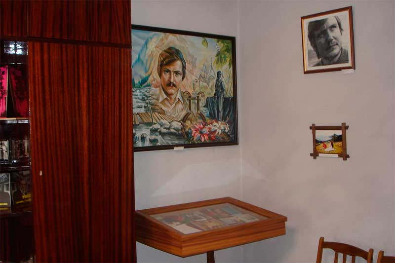
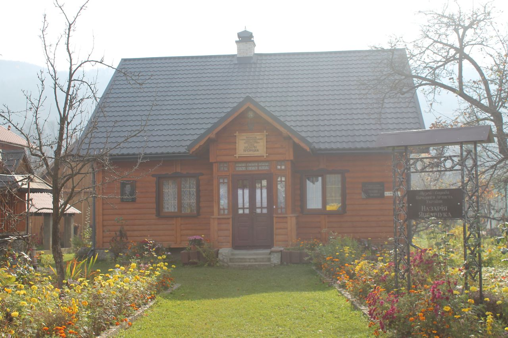

Пам'ятні місця Буковини
Чернівецька область — це справжня перлина Західної України, багата на історичні, природні та архітектурні пам’ятки. Тут ви можете знайти унікальні фортеці, університети, мальовничі скелі, водоспади і церкви, які приваблюють туристів не лише з України, а й з усього світу.
Чернівецький Національний університет імені Юрія Федьковича
Один із найвідоміших архітектурних ансамблів України, внесений до списку Світової спадщини ЮНЕСКО. Колишня Резиденція митрополитів Буковини і Далмації, цей університет відомий своєю неоготичною архітектурою з елементами візантійського та романського стилів. Величні корпуси та мальовничі сади створюють атмосферу європейської середньовічної школи.
Цікаві факти: Будівництво тривало з 1864 по 1882 рік. На сьогодні університет є одним з головних освітніх центрів України.
Хотинська фортеця
Розташована на правому березі Дністра, у місті Хотин, фортеця є однією з наймогутніших і найстаріших в Україні. Її історія налічує понад 1000 років, і за цей час вона була важливим стратегічним пунктом для різних держав. Фортеця неодноразово брала участь у важливих історичних подіях, таких як Хотинська битва 1621 року між Османською імперією і польсько-козацькими військами.
Особливості: масивні стіни, що досягають 40 метрів у висоту, величні вежі та каземати, а також краєвиди на Дністер.
Буковинські музеї
Музей під відкритим небом у Чернівцях
Музей архітектури та побуту Буковини під відкритим небом. Експозиція включає традиційні селянські будинки та господарські будівлі з різних регіонів Чернівецької області.
Музей Володимира Івасюка
Музей відомого українського композитора Миколи Івасюка, автора легендарної пісні «Червона рута».
Музей-садиба Назарія Яремчука
Музей-садиба знаменитого українського співака Назарія Яремчука вважається головною туристичною і архітектурною перлиною міста Вижниця. Будинок Яремчука є яскравим прикладом будинку буковинського селянина.
Буковинські водоспади
Буковинські водоспади — це група з семи невеликих водоспадів на річці Смухар, розташованих поблизу села Розтоки. Кожен із водоспадів має свою висоту (від 3 до 19 метрів), а вся територія вважається геологічною пам'яткою природи місцевого значення. Ці водоспади заховані у гірських схилах і оточені мальовничими лісами, що робить їх ідеальним місцем для відпочинку на природі.
Скеля "Протяте каміння"
Це комплекс скельних утворень, розташований у горах Карпатах поблизу села Розтоки. Скелі мають унікальні форми, що були створені протягом тисячоліть під впливом вітру та води. Найвідоміша частина комплексу — це так званий "Арочний камінь" із наскрізними отворами, що створює враження, ніби каміння "протяте" природними силами.
Чернівецький музично-драматичний театр імені Ольги Кобилянської
Розташований у центрі Чернівців, цей театр є архітектурною і культурною пам'яткою міста. Його будівля була зведена у стилі неоренесансу в 1905 році за проектом австрійського архітектора Фердинанда Фельнера. Вона вражає своїм внутрішнім оздобленням і акцентами на фасаді, включаючи масивні колони, ліпнину та скульптурні композиції.
РЛС Памір
РЛС "Памір" — це радіолокаційна станція, розташована на вершині гори Томнатик у Чернівецькій області, у Карпатах, на кордоні з Румунією. Вона відома як унікальний об’єкт військової інфраструктури, який був активним у часи холодної війни. Сьогодні це місце стало популярною туристичною атракцією, завдяки своїй історії та мальовничому розташуванню.